Documentação técnica apresentada à disciplina Programação de Computadores - UDF, ministrada por Professora Karla Roberto Sartin, como registro profissional do processo de desenvolvimento, arquitetura, implementação, fluxos de uso, validação e implantação do projeto Dead Streets.
Este documento apresenta a documentação técnica completa do jogo Dead Streets, um jogo 2D de sobrevivência desenvolvido em Python com Pygame, mapas criados no Tiled, sprites em pixel art, áudio em OGG, suporte a desktop e empacotamento web por Pygbag/WebAssembly. O projeto implementa exploração em mapas, movimentação com teclado, mouse e controle, inventário, atalhos rápidos, crafting, armas corpo a corpo e de fogo, munições especiais, inimigos com variantes, arenas de boss, transições de áreas, save local e persistência no navegador. A documentação descreve os objetivos, metodologia, requisitos, arquitetura, módulos, estruturas de dados, fluxos de jogo, casos de uso, validação e implantação. Também são incluídas figuras geradas a partir dos próprios mapas e assets do repositório, além de trechos de código numerados e tabelas técnicas.
Palavras-chave: Python. Pygame. Jogo 2D. Sobrevivência. Tiled. WebAssembly. Documentação técnica.
O projeto Dead Streets é um jogo 2D de sobrevivência em visão superior, construído em Python com a biblioteca Pygame. A proposta combina exploração de cenários pós-apocalípticos, combate contra zumbis, gerenciamento de recursos, criação de itens, coleta de loot e progressão por mapas normais, interiores e arenas de boss. O jogo foi estruturado para execução local em desktop e para publicação em navegador por meio de Pygbag/WebAssembly.
A documentação técnica tem como finalidade registrar o desenvolvimento de forma profissional, detalhando decisões de arquitetura, organização do código, regras de negócio, estruturas de dados, assets, fluxos de uso, requisitos, validação e implantação. O documento também preserva uma visão acadêmica do projeto, com introdução, metodologia e conclusão, e uma visão operacional, com tabelas, diagramas, trechos de código e especificações dos módulos.
O repositório analisado contém 8 arquivos Python principais, 6663 linhas de código Python, 10 mapas TMJ, 17 tilesets externos, 2162 sprites PNG e 40 arquivos de áudio OGG. Esses números evidenciam que o projeto extrapola um protótipo mínimo e já possui subsistemas integrados de jogo, apresentação, entrada, persistência e publicação.
Jogos 2D com múltiplos sistemas exigem coordenação entre renderização, entrada, física simplificada, IA, colisão, dados de mapa, áudio, inventário e persistência. Sem documentação, a manutenção se torna difícil porque regras importantes ficam implícitas no código. O problema tratado por este documento é transformar o conhecimento disperso no repositório em uma referência técnica organizada, capaz de orientar manutenção, avaliação acadêmica e futuras evoluções.
Descrever detalhadamente o processo de desenvolvimento e a arquitetura do Dead Streets, apresentando seus módulos, fluxos, requisitos, casos de uso, assets, regras internas e procedimentos de execução e publicação.
O documento cobre o código existente no repositório local, incluindo os arquivos Python, mapas, tilesets, sprites, áudio, configurações de build e README. Não são tratados aspectos jurídicos de licenciamento de assets além da menção de que os recursos visuais e sonoros compõem o pacote do projeto. A análise técnica se concentra no funcionamento implementado e nos contratos observáveis entre módulos.
O desenvolvimento seguiu uma abordagem incremental e orientada a protótipos jogáveis. Em vez de separar longamente análise e implementação, os sistemas foram incorporados ao loop principal de jogo e refinados conforme novas necessidades surgiram: primeiro a movimentação e renderização, depois colisão e mapas, em seguida inventário, crafting, combate, inimigos, bosses, áudio, save e empacotamento web.
A escolha de Pygame permitiu controlar diretamente surfaces, sprites, eventos, joystick, mixer de áudio e temporização. O Tiled foi usado como ferramenta de autoria de mapas, separando o conteúdo espacial do código. O Pygbag foi adotado como solução de empacotamento web, permitindo que o jogo Python fosse executado no navegador via WebAssembly.
| Etapa | Descrição | Evidência no projeto |
|---|---|---|
| Concepção | Definição de um jogo de sobrevivência zumbi com exploração e combate. | README, título Dead Streets e assets pós-apocalípticos. |
| Base técnica | Inicialização do Pygame, janela, loop, FPS e estados de menu/jogo. | main.py, classe Game e função main. |
| Mundo e mapas | Criação de mapas TMJ no Tiled e carregamento por camadas. | maps/*.tmj, map_loader.py. |
| Jogador | Implementação de movimento, stamina, vida, fome, mira e animações. | player.py. |
| Sistemas | Inventário, crafting, armas, loot e atalhos rápidos. | inventory.py, crafting.py, weapons.py, main.py. |
| IA e combate | Zumbis com tipos, colisões, ataques, bosses e projéteis. | zombie.py e métodos de combate em main.py. |
| Polimento | Áudio OGG, UI, mensagens, popups e suporte a controle. | audio/, sprites/ui, métodos de menu/UI. |
| Persistência e web | Save em JSON/localStorage e build Pygbag. | save_system.py, pygbag.ini e tools/patch_web_build.py. |
A organização foi baseada em separação por responsabilidade. Dados estáticos de armas ficam em weapons.py; receitas em crafting.py; inventário em inventory.py; persistência em save_system.py; mapas em map_loader.py; jogador em player.py; inimigos em zombie.py. O arquivo main.py concentra o loop e a orquestração porque muitos comportamentos dependem simultaneamente de entrada, estado, renderização e interação entre entidades.
O escopo funcional do jogo inclui uma experiência jogável completa: o usuário inicia ou carrega uma partida, explora mapas, coleta recursos, enfrenta inimigos, gerencia itens, cria equipamentos, atravessa áreas e salva progresso. O escopo técnico inclui execução desktop e web, carregamento de assets, suporte a controle e persistência compatível com ambiente local e navegador.
| Código | Requisito | Descrição |
|---|---|---|
| RF01 | Menu inicial | Permitir iniciar novo jogo, carregar saves, ajustar configurações e acessar tutorial. |
| RF02 | Movimentação | Permitir mover o jogador por teclado e controle, com corrida condicionada à stamina. |
| RF03 | Mira e ataque | Permitir mirar com mouse ou analógico e atacar com melee ou arma equipada. |
| RF04 | Inventário | Armazenar recursos, consumíveis, munições e armas coletadas. |
| RF05 | Atalhos rápidos | Permitir selecionar slots de 1 a 6 para armas e itens úteis. |
| RF06 | Crafting | Permitir criar itens a partir de receitas e recursos disponíveis. |
| RF07 | Loot | Permitir buscar recursos em carros, natureza, despensas e corpos. |
| RF08 | Inimigos | Gerar zumbis com variantes, vida, ataques, animações e morte. |
| RF09 | Mapas | Carregar mapas externos do Tiled com colisões, portas e teletransportes. |
| RF10 | Bosses | Executar arenas de boss e conceder recompensas após derrota. |
| RF11 | Áudio | Reproduzir música e efeitos sonoros configuráveis. |
| RF12 | Persistência | Salvar e carregar partida em arquivo JSON ou localStorage. |
| Código | Requisito | Descrição |
|---|---|---|
| RNF01 | Portabilidade | Rodar em desktop Python e em navegador via Pygbag. |
| RNF02 | Desempenho | Evitar desenhar entidades fora da câmera e usar buckets para tiles/colisões. |
| RNF03 | Manutenibilidade | Separar dados de armas, receitas, inventário e mapas em módulos dedicados. |
| RNF04 | Compatibilidade de áudio | Utilizar OGG para simplificar desktop e web. |
| RNF05 | Usabilidade | Fornecer controles por teclado/mouse e controle, além de tutorial e mensagens. |
| RNF06 | Persistência resiliente | Adaptar save para filesystem no desktop e storage do navegador na web. |
| RNF07 | Escalabilidade de conteúdo | Permitir novos mapas TMJ e assets sem reescrever o carregador principal. |
A arquitetura é centralizada por uma classe Game, responsável por orquestrar estados, entrada, atualização, renderização e integração entre os demais módulos. Essa escolha é comum em jogos Pygame de porte acadêmico porque o loop principal precisa coordenar muitos dados a cada frame. Os módulos auxiliares encapsulam dados e comportamentos de domínio para reduzir a complexidade direta do arquivo principal.
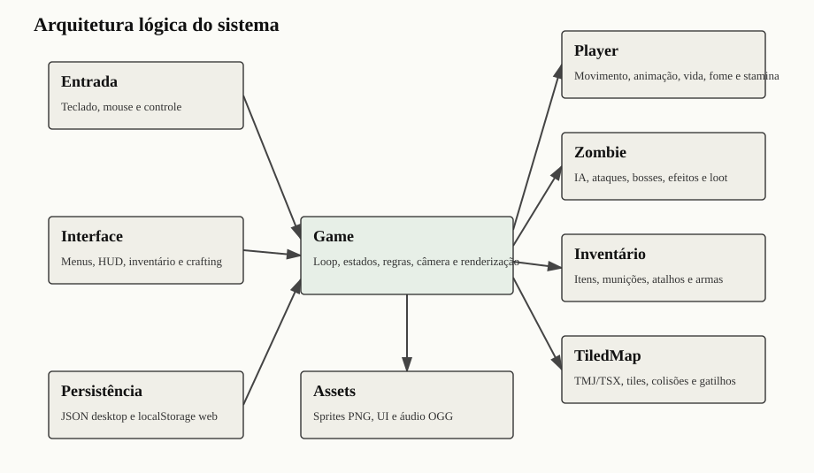
| Módulo | Linhas | Classes | Funções livres | Constantes | Responsabilidade |
|---|---|---|---|---|---|
| crafting.py | 74 | 1 | 0 | 0 | Sistema de receitas, validação de recursos, desbloqueio por posse de armas e produção de itens. |
| inventory.py | 59 | 1 | 0 | 0 | Estrutura simples de armazenamento de itens, munições e armas, com operações de adicionar/remover/consultar. |
| main.py | 4787 | 7 | 14 | 84 | Núcleo do jogo: inicialização, loop, estados de menu/jogo, renderização, entrada, combate, loot, bosses, UI, transições e áudio. |
| map_loader.py | 402 | 5 | 0 | 10 | Leitura de mapas Tiled, tilesets TSX, layers, colisões, pontos de busca e gatilhos de porta/teleporte. |
| player.py | 510 | 1 | 0 | 9 | Entidade do jogador, animações compostas por loadout, movimentação, dano, cura, fome, stamina e estado de morte. |
| save_system.py | 76 | 0 | 4 | 1 | Persistência em JSON no desktop e localStorage no navegador WebAssembly. |
| weapons.py | 93 | 0 | 0 | 1 | Tabela declarativa de armas, munições, dano, alcance, cooldown, dispersão e efeitos especiais. |
| zombie.py | 662 | 1 | 0 | 19 | Entidade dos inimigos, variantes, animação, ataques corpo a corpo, arremesso de machado, efeitos e comportamento de perseguição. |
| Módulo | Classe | Linha | Métodos | Resumo dos métodos |
|---|---|---|---|---|
| crafting.py | CraftingSystem | 8 | 4 | is_recipe_unlocked, craft, get_recipe_names, get_recipe |
| inventory.py | Inventory | 6 | 6 | __init__, add_item, remove_item, get_quantity, has_items, to_dict |
| main.py | Decoration | 740 | 3 | __init__, _create_sprite, draw |
| main.py | SearchNode | 781 | 3 | __init__, search, draw |
| main.py | MapTrigger | 848 | 1 | __init__ |
| main.py | ShotImpact | 855 | 4 | __init__, update, is_finished, draw |
| main.py | AxeProjectile | 904 | 6 | __init__, _direction_name, update, is_finished, can_damage_player, draw |
| main.py | FloatingPopup | 955 | 4 | __init__, update, is_finished, draw |
| main.py | Game | 1009 | 203 | __init__, _present_frame, _build_menu_title_layers, _first_existing_path, _available_normal_maps, _is_boss_map_path, _available_boss_maps, _boss_loop_level, _next_boss_key, _next_boss_map_path, _boss_stats_for_map, _is_summoner_boss_active, _choose_random_normal_map, _normal_map_index, _boss_is_alive, _boss_enemies, _is_boss_enemy, _is_horde_map ... |
| map_loader.py | SearchNodeSpawn | 37 | 0 | |
| map_loader.py | MapTriggerSpawn | 45 | 0 | |
| map_loader.py | TileSet | 52 | 2 | lastgid, contains |
| map_loader.py | TileLayer | 75 | 0 | |
| map_loader.py | TiledMap | 80 | 14 | __init__, _load_tilesets, _resolve_tileset_path, _resolve_image_path, _load_tileset_image, _load_layers, _build_draw_buckets, _get_tile_surface, _find_tileset, _is_solid_layer, _make_search_nodes, _make_trigger_spawns, _collect_cluster, draw |
| player.py | Player | 78 | 34 | __init__, _load_sprites, _load_loadout_sprites, _compose_weapon_loadout, _compose_frame, _tint_weapon_layers, _tint_sprite, _load_spritesheet, _resolve_frame_count, move, clamp_to_area, set_position, aim_at, take_damage, heal, restore_hunger, start_attack_animation, start_pickup_animation ... |
| zombie.py | Zombie | 58 | 37 | __post_init__, _load_sprites, _load_spritesheet, _direction_from_vector, _sprite_color_overlay, _flash_sprite, _available_animation, _animation_key, _current_frames, _current_sprite, _shadow_surface, _scaled_surface, _has_animation, _choose_attack_variant, _can_start_lunge, _start_attack, _start_retreat, _set_state ... |
Como a classe Game é a coordenadora do projeto, seus métodos foram agrupados por responsabilidade para facilitar leitura e manutenção. Essa tabela complementa o inventário completo do apêndice e mostra a intenção arquitetural por trás da concentração do loop principal.
| Grupo | Métodos representativos | Responsabilidade |
|---|---|---|
| Configuração e áudio | _load_settings, _save_settings, _apply_audio_settings, _load_sfx, _play_music | Carrega preferências, aplica volumes, inicializa efeitos e alterna música de menu, jogo e boss. |
| Mundo e mapas | _load_tiled_world, _switch_to_tiled_map, _enter_random_interior, _leave_interior, _use_map_exit | Resolve mapas TMJ, preserva estado externo, troca áreas e sincroniza gatilhos de portas e teletransportes. |
| Entrada e menus | process_input, process_menu_input, _apply_gamepad_input, _handle_main_menu_action | Converte eventos de teclado, mouse e controle em ações de jogo ou navegação de interface. |
| Inimigos e bosses | _spawn_zombie, _create_boss_zombie, _update_zombies, _update_boss_phase, _summon_boss_wave | Gera inimigos, atualiza IA, controla bosses, ondas, minions e condições de derrota. |
| Interação e loot | _handle_search, _corpse_loot_rewards, _grant_rewards, _add_item_popups | Processa busca em nós/corpos, sorteia recompensas e apresenta feedback visual e sonoro. |
| Combate | _handle_attack, _attack_melee, _fire_gun, _find_shot_hits, _damage_zombie, _apply_weapon_status | Centraliza cooldowns, dano, munição, projéteis, impacto, fogo, gelo e morte de zumbis. |
| Interface | _draw_ui, _draw_inventory_panel, _draw_crafting_panel, _draw_quick_access_bar, _draw_ammo_indicator | Renderiza HUD, painéis, atalhos, munição, barras e mensagens do jogo. |
| Colisão e câmera | _resolve_player_collisions, _resolve_zombie_obstacles, _separate_zombies, _update_camera | Mantém jogador/inimigos dentro do mundo, evita obstáculos e posiciona a câmera. |
O loop principal fica no método run da classe Game e mantém a cadência de atualização. Em cada iteração, o jogo processa entrada, atualiza estado, renderiza o frame e apresenta o resultado. A constante TARGET_FPS diferencia desktop e web, usando 60 FPS localmente e 45 FPS na web para reduzir custo de renderização no canvas WebAssembly.
4767 | async def run(self) -> None:
4768 | while self.is_game_running:
4769 | dt = self.clock.tick(TARGET_FPS) / 1000.0
4770 | if IS_WEB:
4771 | await asyncio.sleep(0)
4772 | if self._screen_state == "playing":
4773 | direction, running, craft_pressed, search_pressed, attack_pressed, heal_pressed = self.process_input()
4774 | self.update_game_state(direction, running, craft_pressed, search_pressed, attack_pressed, heal_pressed, dt)
4775 | self.render(dt)
4776 | else:
4777 | self.process_menu_input()
4778 | self.render_menu(dt)
4779 | pygame.quit()
4780 |
4781 |
4782 | async def main() -> None:
4783 | await Game().run()
4784 |
4785 |
4786 | if __name__ == "__main__":
4787 | asyncio.run(main())Leitura técnica do loop
O estado de aplicação alterna entre menu, jogo, painéis e condições especiais como tutorial, inventário, crafting e morte. A separação de métodos de entrada e renderização por contexto reduz conflitos: menus usam process_menu_input e render_menu; jogo usa process_input, update_game_state e render; painéis bloqueiam parcialmente gameplay por meio de checagens específicas.
O projeto utiliza dados em diferentes níveis: dados declarativos em Python para armas e receitas, dados espaciais em mapas TMJ/TSX, dados visuais em PNG, áudio em OGG e dados persistidos em JSON/localStorage. Essa combinação permite que regras e conteúdo sejam alterados sem que toda a lógica precise ser reescrita.
| Mapa | Dimensão em tiles | Tile | Tilesets | Camadas |
|---|---|---|---|---|
| Boss 1.tmj | 30x30 | 16x16 | 8 | Ground, Decor, Nature, Teleport |
| Boss 2.tmj | 30x30 | 16x16 | 4 | Ground, Decor, Nature, Teleport |
| Boss 3.tmj | 30x30 | 16x16 | 4 | Ground, Decor, Nature, Teleport |
| interior 1.1.tmj | 10x8 | 16x16 | 3 | Ground, Walls, Decor, Loot |
| Interior 1.tmj | 10x8 | 16x16 | 4 | Ground, Walls, Decor, Loot |
| Mapa 1.1.tmj | 50x30 | 16x16 | 11 | Ground, Buildigns, Portas, Decor, Colliders, Nature, Cars, Teleport |
| Mapa 1.tmj | 50x30 | 16x16 | 11 | Ground, Buildigns, Portas, Decor, Colliders, Nature, Cars, Teleport |
| Mapa 2.tmj | 50x30 | 16x16 | 6 | Ground, Buildigns, Portas, Decor, Nature, Cars, Teleport |
| Mapa 3.tmj | 50x30 | 16x16 | 4 | Ground, Nature, Decor, Cars, Teleport |
| Mapa 4.tmj | 50x30 | 16x16 | 13 | Ground, Buildigns, Portas, Nature, Decor, Cars, Teleport |
As camadas dos mapas possuem papel semântico. Nomes contendo collision, solid, objects, building, wall ou car geram retângulos de colisão. Camadas Nature, Loot e Cars geram pontos de busca. Camadas Portas/Door geram transições de porta, enquanto Teleport gera saídas entre mapas ou arenas.
As figuras a seguir apresentam apenas a renderização visual dos mapas principais do jogo. A visualização técnica com sobreposição de colisões foi removida desta versão para evitar repetição visual e dar espaço a todos os cenários principais: bosses, interior e mapas externos.
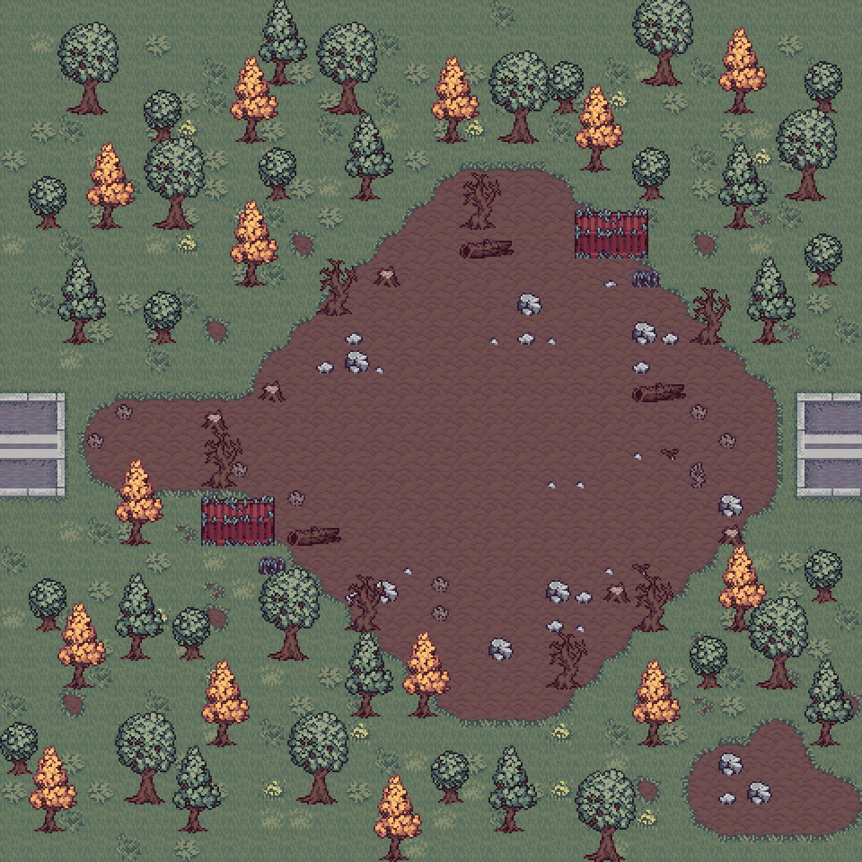
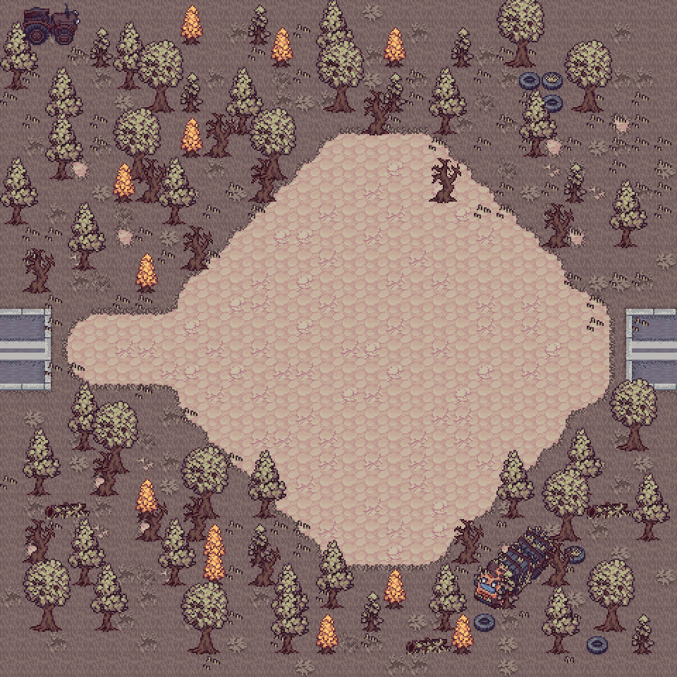
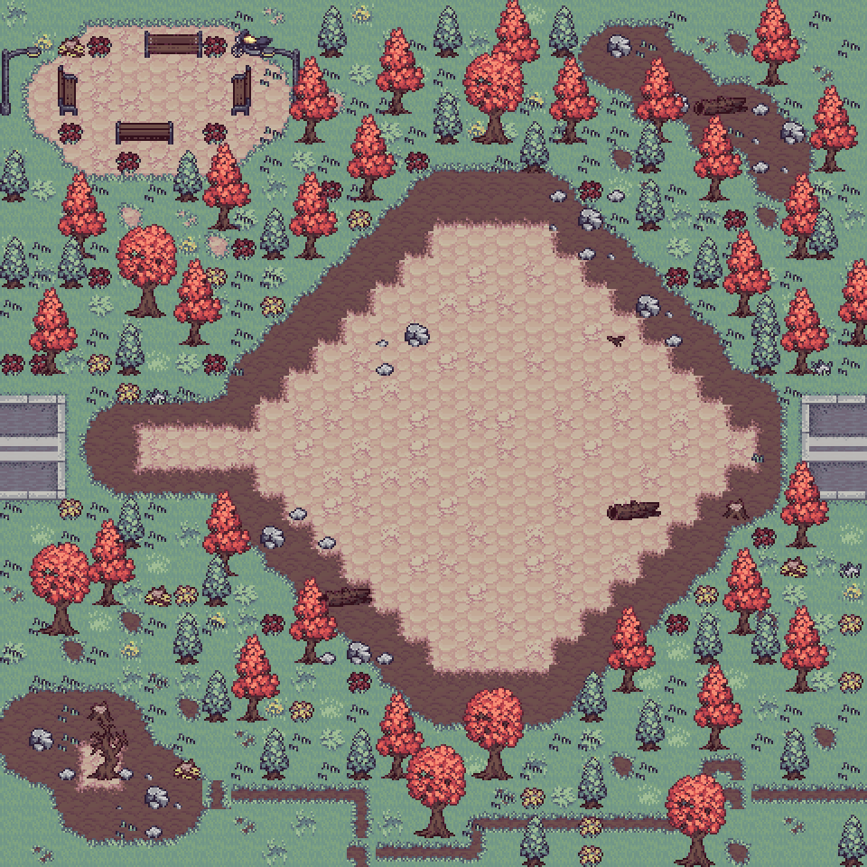
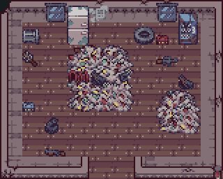
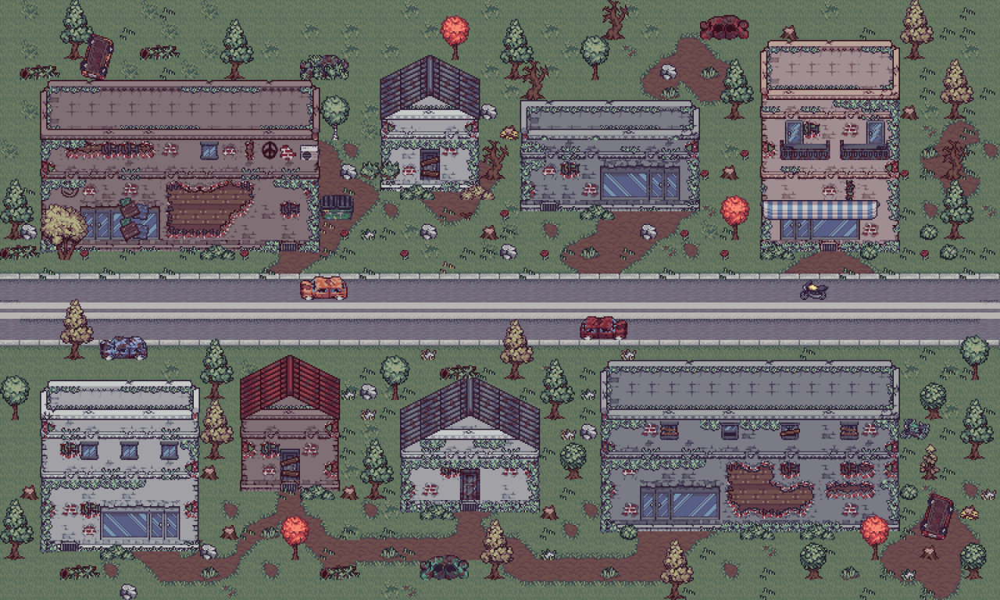
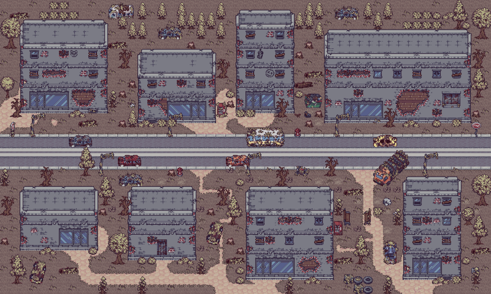
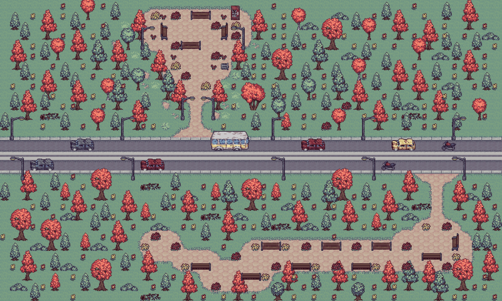
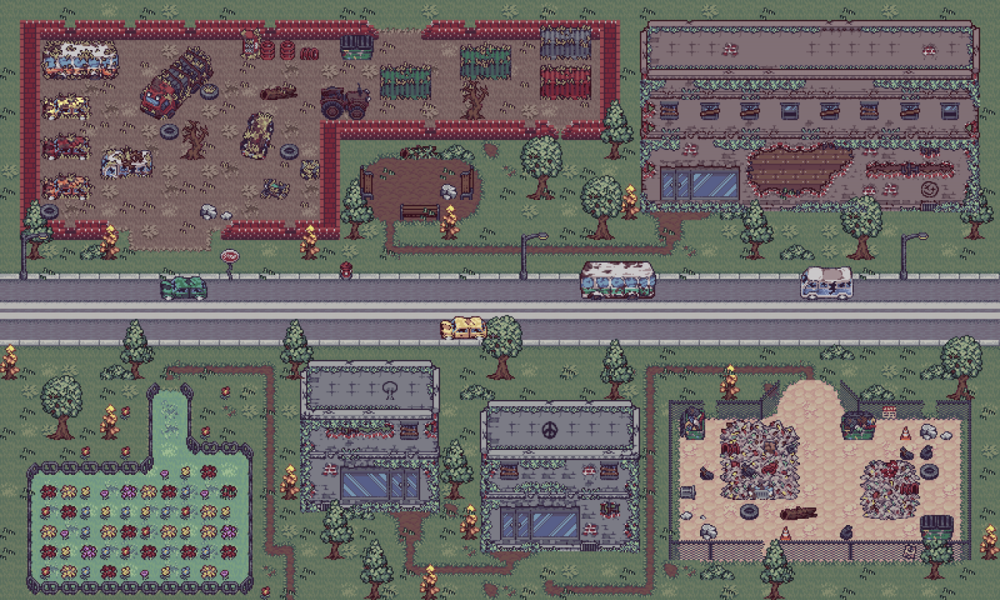
Os sprites são organizados por categoria: personagem, armas, zumbis, objetos, UI e pacote visual pós-apocalíptico. O carregamento de spritesheets extrai frames por contagem declarada no nome do arquivo, o que simplifica adicionar novas animações desde que o padrão de nome seja preservado.
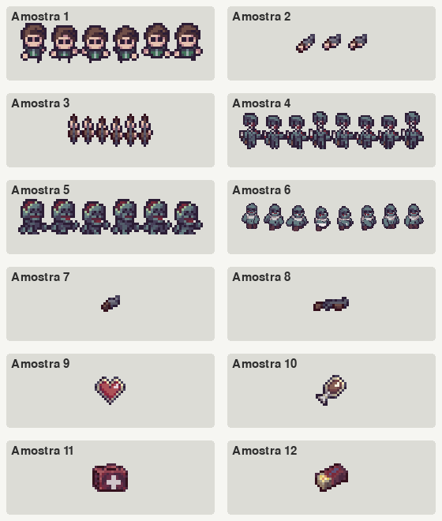
| Item | Quantidade inicial |
|---|---|
| madeira | 0 |
| metal | 0 |
| comida | 0 |
| pano | 0 |
| erva | 0 |
| kit_medico | 0 |
| polvora | 0 |
| balas | 0 |
| balas_incendiarias | 0 |
| balas_perfurantes | 0 |
| cartuchos | 0 |
| cartuchos_incendiarios | 0 |
| maos | 1 |
| taco | 0 |
| pistola | 0 |
| pistola_incendiaria | 0 |
| pistola_perfurante | 0 |
| escopeta | 0 |
| escopeta_incendiaria | 0 |
| Item produzido | Custo | Quantidade | Desbloqueio |
|---|---|---|---|
| taco | madeira: 3 | 1 | - |
| comida | erva: 1, madeira: 1 | 1 | - |
| balas | metal: 1, polvora: 1 | 6 | - |
| cartuchos | metal: 2, polvora: 1 | 3 | escopeta, escopeta_incendiaria |
| balas_incendiarias | balas: 4, polvora: 1 | 4 | pistola_incendiaria |
| balas_perfurantes | balas: 4, metal: 2 | 4 | pistola_perfurante |
| cartuchos_incendiarios | cartuchos: 2, polvora: 1 | 2 | escopeta_incendiaria |
| kit_medico | pano: 2, erva: 2 | 1 | - |
| Arma | Família | Dano | Alcance | Cooldown | Munição | Projéteis | Efeito |
|---|---|---|---|---|---|---|---|
| maos | melee | 8 | 28 | 0.45 | - | - | - |
| taco | melee | 20 | 50 | 0.5 | - | - | - |
| pistola | pistola | 38 | 460 | 0.35 | balas | 1 | - |
| pistola_incendiaria | pistola | 30 | 430 | 0.42 | balas_incendiarias | 1 | fire |
| pistola_perfurante | pistola | 34 | 520 | 0.48 | balas_perfurantes | 1 | ice |
| escopeta | escopeta | 80 | 260 | 0.85 | cartuchos | 5 | - |
| escopeta_incendiaria | escopeta | 58 | 235 | 1.0 | cartuchos_incendiarios | 4 | fire |
O carregador TiledMap lê arquivos JSON TMJ, resolve tilesets externos TSX, carrega imagens, aplica flips horizontais e verticais do Tiled e gera surfaces escaladas. Para desempenho, tiles são armazenados em cache por GID e buckets de desenho agrupam elementos por região, evitando percorrer o mapa inteiro a cada frame.
80 | class TiledMap:
81 | def __init__(self, map_path: str | Path, scale: int = 2) -> None:
82 | self.path = Path(map_path)
83 | self.scale = max(1, int(scale))
84 | data = json.loads(self.path.read_text(encoding="utf-8"))
85 |
86 | self.tile_width = int(data["tilewidth"])
87 | self.tile_height = int(data["tileheight"])
88 | self.width_tiles = int(data["width"])
89 | self.height_tiles = int(data["height"])
90 | self.render_tile_width = self.tile_width * self.scale
91 | self.render_tile_height = self.tile_height * self.scale
92 | self.world_width = self.width_tiles * self.render_tile_width
93 | self.world_height = self.height_tiles * self.render_tile_height
94 |
95 | self.tilesets = self._load_tilesets(data.get("tilesets", []))
96 | self._tile_cache: dict[tuple[int, bool, bool], pygame.Surface] = {}
97 | self.layers: list[TileLayer] = []
98 | self._layer_tile_buckets: list[dict[tuple[int, int], tuple[tuple[int, int, pygame.Surface], ...]]] = []
99 | self._max_tile_width = self.render_tile_width
100 | self._max_tile_height = self.render_tile_height
101 | self.collision_rects: list[pygame.Rect] = []
102 | self.search_nodes: list[SearchNodeSpawn] = []
103 | self.door_triggers: list[MapTriggerSpawn] = []
104 | self.exit_triggers: list[MapTriggerSpawn] = []
105 | self.unrendered_tiles_by_layer: dict[str, int] = {}
106 |
107 | self._load_layers(data.get("layers", []))
108 | self._build_draw_buckets()
109 |
110 | def _load_tilesets(self, tileset_refs: Iterable[dict]) -> list[TileSet]:
111 | tilesets: list[TileSet] = []
112 | for tileset_ref in tileset_refs:
113 | source = tileset_ref.get("source")Documentação do trecho
A criação de pontos de busca e gatilhos usa clusters de tiles ocupados. Em vez de criar um ponto por tile, o carregador agrupa tiles adjacentes, calcula o centro médio e registra um spawn técnico. Isso reduz ruído de interação e torna as camadas do Tiled mais intuitivas.
306 | normalized = layer_name.lower()
307 | if normalized == "nature":
308 | node_type = "natureza"
309 | else:
310 | node_type = SEARCH_NODE_LAYERS.get(normalized)
311 | if node_type is None:
312 | return []
313 |
314 | nodes: list[SearchNodeSpawn] = []
315 | seen: set[tuple[int, int]] = set()
316 | for start in occupied_tiles:
317 | if start in seen:
318 | continue
319 | cluster = self._collect_cluster(start, occupied_tiles, seen)
320 | if not cluster:
321 | continue
322 |
323 | avg_x = sum(tile[0] for tile in cluster) / len(cluster)
324 | avg_y = sum(tile[1] for tile in cluster) / len(cluster)
325 | nodes.append(
326 | SearchNodeSpawn(
327 | node_type=node_type,
328 | position=(
329 | int((avg_x + 0.5) * self.render_tile_width),
330 | int((avg_y + 0.5) * self.render_tile_height),
331 | ),
332 | )
333 | )
334 | return nodes
335 |
336 | def _make_trigger_spawns(self, layer_name: str, occupied_tiles: set[tuple[int, int]]) -> list[MapTriggerSpawn]:
337 | trigger_type = TRIGGER_LAYER_TYPES.get(layer_name.lower())
338 | if trigger_type is None:
339 | return []
340 |
341 | triggers: list[MapTriggerSpawn] = []Contrato de camadas
A classe Player concentra atributos vitais e cinemáticos: vida, fome, stamina, posição, arma atual, velocidade base, velocidade de corrida, cooldowns e estado de animação. O movimento usa vetores Pygame, normalização de direção e atualização por delta time, permitindo comportamento independente da taxa de quadros.
78 | class Player:
79 | SPRITE_SCALE: ClassVar[int] = 3
80 | _sprite_cache: ClassVar[dict[str, dict[str, dict[str, list[pygame.Surface]]]]] = {}
81 | _shadow_cache: ClassVar[dict[tuple[int, int], pygame.Surface]] = {}
82 |
83 | def __init__(self, position: Tuple[float, float]) -> None:
84 | self.max_health: int = 100
85 | self.max_hunger: float = 100.0
86 | self.player_health: int = 100
87 | self.player_hunger: float = 100.0
88 | self.player_stamina: float = 100.0
89 | self.player_position: Tuple[float, float] = position
90 | self.current_weapon: str = "maos"
91 |
92 | self._pos = pygame.Vector2(position)
93 | self.facing_direction = pygame.Vector2(1, 0)
94 | self.radius = 14
95 | self.base_speed = 140.0
96 | self.run_speed = 210.0
97 | self.stamina_recovery = 18.0
98 | self.stamina_cost = 28.0
99 | self._damage_cooldown = 0.0
100 | self.hit_flash_timer = 0.0
101 | self.heal_flash_timer = 0.0
102 | self.attack_animation_timer = 0.0
103 | self._is_moving = False
104 | self._is_running = False
105 | self._state = "idle"
106 | self._animation_time = 0.0
107 | self._pickup_timer = 0.0
108 | self._death_variant = "death_1"
109 | self._death_finished = False
110 | self._load_sprites()
111 |
112 | @classmethodResponsabilidades do Player
O sistema de sprites do jogador combina corpo e camadas de armas. Isso permite que o mesmo corpo seja reaproveitado com mãos, taco, pistola e escopeta, reduzindo duplicação visual. Variações especiais de armas recebem tintura aplicada sobre as camadas correspondentes.
A classe Zombie é uma dataclass com atributos de posição, velocidade, vida, raio, tipo, dano, alcance, timers e flags de ataque. O projeto implementa variantes axe, small e big, cada uma com sprites e comportamento próprio. O zumbi pequeno possui investida e recuo; o zumbi com machado pode arremessar projétil dentro de uma faixa de distância; bosses usam estatísticas e regras próprias criadas pela classe Game.
58 | class Zombie:
59 | position: pygame.Vector2
60 | speed: float
61 | health: int = 30
62 | radius: int = 12
63 | zombie_type: str = "axe"
64 | sprite_scale: float = 1.0
65 | attack_damage: int = 10
66 | attack_range: float = 34.0
67 | can_throw_axe: bool = False
68 | hit_flash_timer: float = 0.0
69 | animation_time: float = 0.0
70 | max_health: int = field(default=30, init=False)
71 | burn_timer: float = field(default=0.0, init=False)
72 | burn_damage_per_second: float = field(default=0.0, init=False)
73 | burn_tick_timer: float = field(default=0.0, init=False)
74 | freeze_timer: float = field(default=0.0, init=False)
75 | facing_direction: str = field(default="down", init=False, repr=False)
76 | loot_given: bool = field(default=False, init=False)
77 | corpse_timer: float = field(default=18.0, init=False)
78 | corpse_searched: bool = field(default=False, init=False)
79 | _is_moving: bool = field(default=False, init=False, repr=False)
80 | _state: str = field(default="idle", init=False, repr=False)
81 | _attack_variant: str = field(default="attack_1", init=False, repr=False)
82 | _death_variant: str = field(default="death_1", init=False, repr=False)
83 | _death_finished: bool = field(default=False, init=False, repr=False)
84 | _attack_has_hit: bool = field(default=False, init=False, repr=False)
85 | _attack_started: bool = field(default=False, init=False, repr=False)
86 | _ranged_attack_fired: bool = field(default=False, init=False, repr=False)
87 | _attack_start_position: pygame.Vector2 = field(default_factory=pygame.Vector2, init=False, repr=False)
88 | _attack_target_position: pygame.Vector2 = field(default_factory=pygame.Vector2, init=False, repr=False)
89 | _retreat_timer: float = field(default=0.0, init=False, repr=False)
90 |
91 | ATTACK_RANGE: ClassVar[float] = 34.0
92 | _sprite_cache: ClassVar[dict[str, dict[str, dict[str, list[pygame.Surface]]]]] = {}
93 | _shadow_cache: ClassVar[dict[tuple[int, int], pygame.Surface]] = {}
94 | _scaled_sprite_cache: ClassVar[dict[tuple[int, float], pygame.Surface]] = {}
95 |
96 | def __post_init__(self) -> None:
97 | self.position = pygame.Vector2(self.position)
98 | self.max_health = max(1, int(self.health))
99 | self.attack_damage = max(1, int(self.attack_damage))
100 | self.attack_range = max(1.0, float(self.attack_range))
101 | self.sprite_scale = max(0.25, float(self.sprite_scale))
102 | if self.zombie_type not in ZOMBIE_TYPES:Responsabilidades do Zombie
A IA evita atravessar obstáculos por resolução de colisões e também aplica separação entre zumbis para reduzir sobreposição visual. A atualização dos inimigos conversa com o estado do mapa, a posição do jogador, efeitos de fogo e gelo, morte, loot de corpo e eventos sonoros.
O combate é dividido em melee e armas de fogo. Armas melee usam alcance circular/retangular próximo ao jogador. Armas de fogo usam dados declarativos da tabela WEAPONS, consomem munição específica, calculam dispersão e podem gerar múltiplos projéteis no caso da escopeta. Munições incendiárias aplicam dano em área e queimadura; munições perfurantes/congelantes aplicam efeito de gelo.
6 | WEAPONS: Dict[str, Dict[str, float | int | str | tuple[int, int, int]]] = {
7 | "maos": {"family": "melee", "damage": 8, "range": 28, "cooldown": 0.45, "ammo": 0},
8 | "taco": {"family": "melee", "damage": 20, "range": 50, "cooldown": 0.5, "ammo": 0},
9 | "pistola": {
10 | "family": "pistola",
11 | "damage": 38,
12 | "range": 460,
13 | "cooldown": 0.35,
14 | "ammo": 1,
15 | "ammo_item": "balas",
16 | "pellets": 1,
17 | "spread": 0,
18 | "hit_width": 4,
19 | "visible_rounds": 6,
20 | "projectile_color": (255, 224, 120),
21 | },
22 | "pistola_incendiaria": {
23 | "family": "pistola",
24 | "damage": 30,
25 | "range": 430,
26 | "cooldown": 0.42,
27 | "ammo": 1,
28 | "ammo_item": "balas_incendiarias",
29 | "pellets": 1,
30 | "spread": 0,
31 | "hit_width": 5,
32 | "visible_rounds": 6,
33 | "projectile_color": (255, 112, 72),
34 | "effect": "fire",
35 | "splash_radius": 54,
36 | "splash_damage": 12,
37 | "burn_duration": 3.2,
38 | "burn_dps": 7,
39 | },
40 | "pistola_perfurante": {
41 | "family": "pistola",
42 | "damage": 34,
43 | "range": 520,
44 | "cooldown": 0.48,
45 | "ammo": 1,
46 | "ammo_item": "balas_perfurantes",
47 | "pellets": 1,
48 | "spread": 0,
49 | "hit_width": 3,
50 | "visible_rounds": 6,
51 | "projectile_color": (105, 190, 255),
52 | "effect": "ice",
53 | "freeze_duration": 1.7,
54 | },
55 | "escopeta": {Como a tabela WEAPONS é usada
A função _handle_attack decide quando um ataque pode ocorrer, respeitando cooldown e arma equipada. A partir dela, o fluxo chama _attack_melee ou _fire_gun, que aplicam dano, geram efeitos visuais e atualizam munição. Esse desenho centraliza a regra de entrada e distribui a aplicação conforme a família da arma.
O inventário é intencionalmente simples: um dicionário de item para quantidade. Essa escolha funciona bem para um jogo de recursos empilháveis e facilita serialização. O crafting valida receita existente, bloqueio, recursos necessários, remoção dos custos e adição do item produzido.
6 | class Inventory:
7 | def __init__(self, initial: Dict[str, int] | None = None) -> None:
8 |
9 | defaults = {
10 | "madeira": 0,
11 | "metal": 0,
12 | "comida": 0,
13 | "pano": 0,
14 | "erva": 0,
15 | "kit_medico": 0,
16 | "polvora": 0,
17 | "balas": 0,
18 | "balas_incendiarias": 0,
19 | "balas_perfurantes": 0,
20 | "cartuchos": 0,
21 | "cartuchos_incendiarios": 0,
22 | "maos": 1,
23 | "taco": 0,
24 | "pistola": 0,
25 | "pistola_incendiaria": 0,
26 | "pistola_perfurante": 0,
27 | "escopeta": 0,
28 | "escopeta_incendiaria": 0,
29 | }
30 | self.inventory: Dict[str, int] = defaults
31 | if initial:
32 | self.inventory.update(initial)
33 | if "municao" in initial and "balas" not in initial:
34 | self.inventory["balas"] = int(initial["municao"])
35 |
36 | def add_item(self, item: str, amount: int = 1) -> None:
37 | if amount <= 0:
38 | return
39 | self.inventory[item] = self.inventory.get(item, 0) + amount
40 |
41 | def remove_item(self, item: str, amount: int = 1) -> bool:
42 | if amount <= 0:
43 | return TrueContrato do Inventory
8 | class CraftingSystem:
9 |
10 | crafting_recipes: Dict[str, Dict[str, object]] = {
11 | "taco": {"cost": {"madeira": 3}},
12 | "comida": {"cost": {"erva": 1, "madeira": 1}, "amount": 1},
13 | "balas": {"cost": {"metal": 1, "polvora": 1}, "amount": 6},
14 | "cartuchos": {"cost": {"metal": 2, "polvora": 1}, "amount": 3, "unlock_any": ["escopeta", "escopeta_incendiaria"]},
15 | "balas_incendiarias": {
16 | "cost": {"balas": 4, "polvora": 1},
17 | "amount": 4,
18 | "unlock": "pistola_incendiaria",
19 | },
20 | "balas_perfurantes": {
21 | "cost": {"balas": 4, "metal": 2},
22 | "amount": 4,
23 | "unlock": "pistola_perfurante",
24 | },
25 | "cartuchos_incendiarios": {
26 | "cost": {"cartuchos": 2, "polvora": 1},
27 | "amount": 2,
28 | "unlock": "escopeta_incendiaria",
29 | },
30 | "kit_medico": {"cost": {"pano": 2, "erva": 2}},
31 | }
32 |
33 | def is_recipe_unlocked(self, item_name: str, inventory: Inventory | None = None) -> bool:
34 | recipe = self.crafting_recipes.get(item_name)
35 | if recipe is None:
36 | return False
37 | if inventory is None:
38 | return "unlock" not in recipe and "unlock_any" not in recipe
39 |
40 | unlock = recipe.get("unlock")
41 | if isinstance(unlock, str) and inventory.get_quantity(unlock) <= 0:
42 | return False
43 |
44 | unlock_any = recipe.get("unlock_any")
45 | if isinstance(unlock_any, list) and not any(inventory.get_quantity(str(item)) > 0 for item in unlock_any):
46 | return False
47 |
48 | return True
49 |
50 | def craft(self, item_name: str, inventory: Inventory) -> Tuple[bool, str]:
51 | if item_name not in self.crafting_recipes:
52 | return False, "Receita inexistente."
53 | if not self.is_recipe_unlocked(item_name, inventory):
54 | return False, "Receita ainda bloqueada."
55 |
56 | recipe = self.crafting_recipes[item_name]
57 | recipe_cost = recipe["cost"]Contrato do CraftingSystem
A persistência salva vida, fome, posição, inventário, tempo de jogo, arma atual e slots rápidos. No desktop, os dados são escritos em savegame.json; no navegador, a função detecta sys.platform igual a emscripten e grava no localStorage. A mesma API pública atende os dois ambientes.
24 | def save_game(
25 | file_path: str,
26 | player: Player,
27 | inventory: Inventory,
28 | game_time: float,
29 | quick_slots: list[str] | None = None,
30 | ) -> None:
31 | data: Dict[str, Any] = {
32 | "player_health": player.player_health,
33 | "player_hunger": player.player_hunger,
34 | "player_position": list(player.player_position),
35 | "inventory": inventory.to_dict(),
36 | "game_time": game_time,
37 | "current_weapon": player.current_weapon,
38 | }
39 | if quick_slots is not None:
40 | data["quick_slots"] = list(quick_slots)
41 | storage = _web_storage()
42 | if storage is not None:
43 | storage.setItem(WEB_SAVE_KEY, json.dumps(data))
44 | return
45 |
46 | with open(file_path, "w", encoding="utf-8") as file:
47 | json.dump(data, file, indent=2)
48 |
49 |
50 | def load_game(file_path: str) -> Dict[str, Any] | None:
51 | storage = _web_storage()
52 | if storage is not None:
53 | raw_data = storage.getItem(WEB_SAVE_KEY)
54 | if not raw_data:
55 | return None
56 | data = json.loads(str(raw_data))
57 | else:
58 | try:
59 | with open(file_path, "r", encoding="utf-8") as file:
60 | data = json.load(file)
61 | except FileNotFoundError:
62 | return None
63 | Contrato do save
O áudio é dividido entre música de menu, música de jogo, música de boss e efeitos sonoros. Os arquivos OGG são carregados a partir de audio/ e audio/sfx/. O volume de música e SFX é configurável, persistido em settings.json ou localStorage na web, e aplicado ao mixer do Pygame.
O jogo usa pygame.joystick e, quando disponível, pygame._sdl2.controller. Existem mapas de botões e eixos para controles SDL e controles crus, varredura periódica de gamepads, deadzone de eixos, analógico esquerdo para movimento, analógico direito para mira e botões dedicados para interagir, atacar, abrir inventário e alternar slots.
Os casos de uso descrevem interações observáveis entre jogador e sistema. Em jogos, um caso de uso frequentemente atravessa vários módulos: iniciar partida envolve menu, reset de estado, mapa e áudio; combater envolve entrada, jogador, arma, inimigo, colisão, áudio, UI e loot.
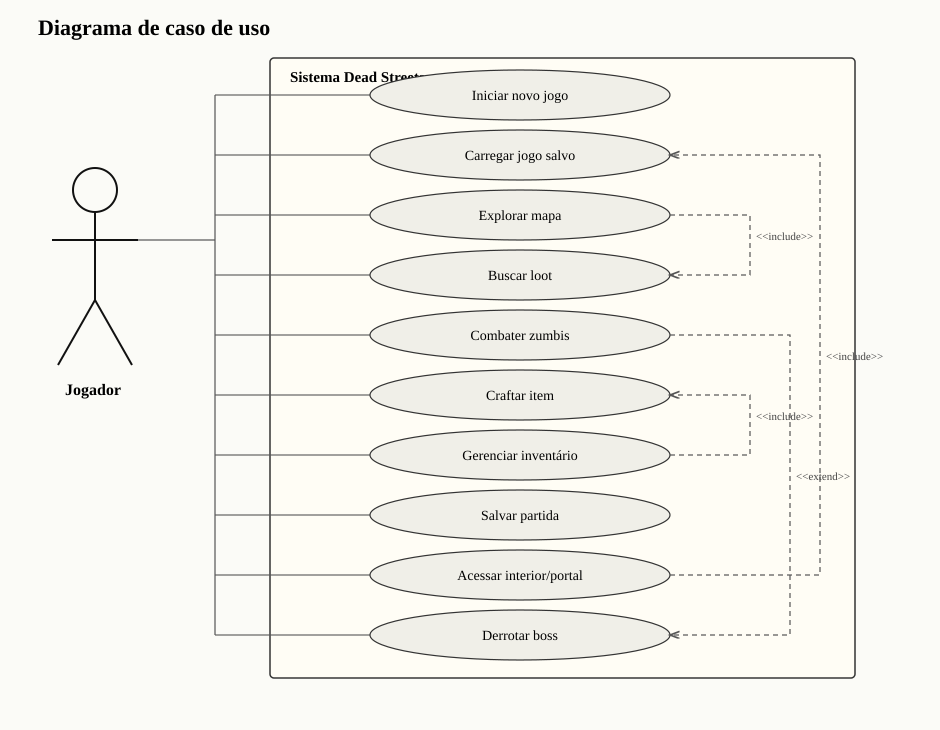
| Código | Caso de uso | Atores | Pré-condição | Pós-condição |
|---|---|---|---|---|
| UC01 | Iniciar novo jogo | Jogador | Selecionar Novo Jogo no menu | Estado reiniciado, mapa inicial carregado, inventário padrão disponível. |
| UC02 | Carregar jogo salvo | Jogador | Existir save local ou localStorage | Jogador, inventário, arma atual e atalhos restaurados. |
| UC03 | Explorar mapa | Jogador | Partida em andamento | Câmera acompanha jogador, colisões bloqueiam obstáculos, recursos podem ser encontrados. |
| UC04 | Buscar loot | Jogador | Estar próximo de nó de busca/corpo | Inventário recebe recompensas e pode ocorrer emboscada. |
| UC05 | Combater zumbis | Jogador e inimigos | Existirem inimigos vivos | Dano aplicado, munição consumida, morte gera corpo pesquisável e recompensas. |
| UC06 | Craftar item | Jogador | Ter recursos e receita desbloqueada | Recursos são removidos e item produzido no inventário. |
| UC07 | Trocar arma/atalho | Jogador | Possuir item ou arma | Slot rápido seleciona item ou equipa arma compatível. |
| UC08 | Salvar partida | Jogador | Jogo em estado válido | Arquivo JSON ou localStorage atualizado. |
| UC09 | Acessar interior/portal | Jogador | Estar dentro do raio do gatilho | Mapa atual é trocado mantendo estado externo quando necessário. |
| UC10 | Derrotar boss | Jogador e bosses | Mapa de boss ativo | Boss removido, recompensas concedidas e progressão liberada. |
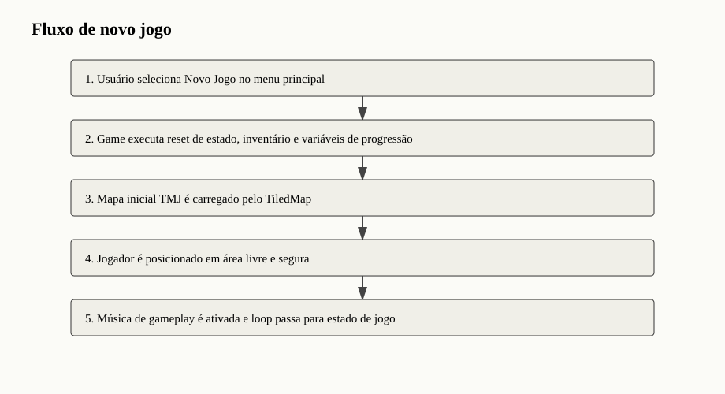
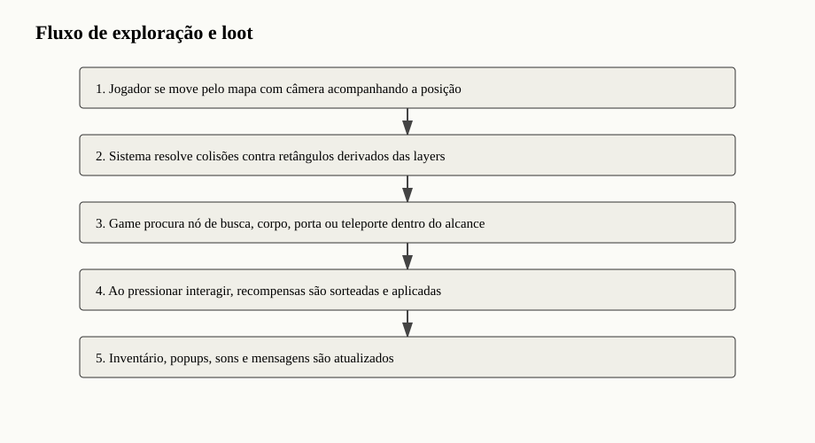
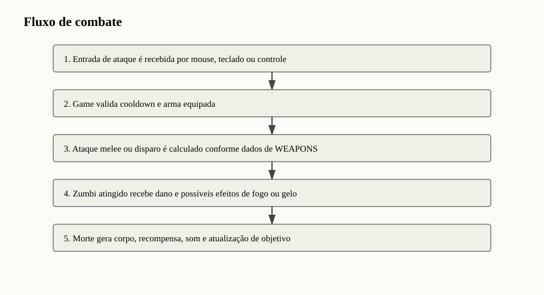
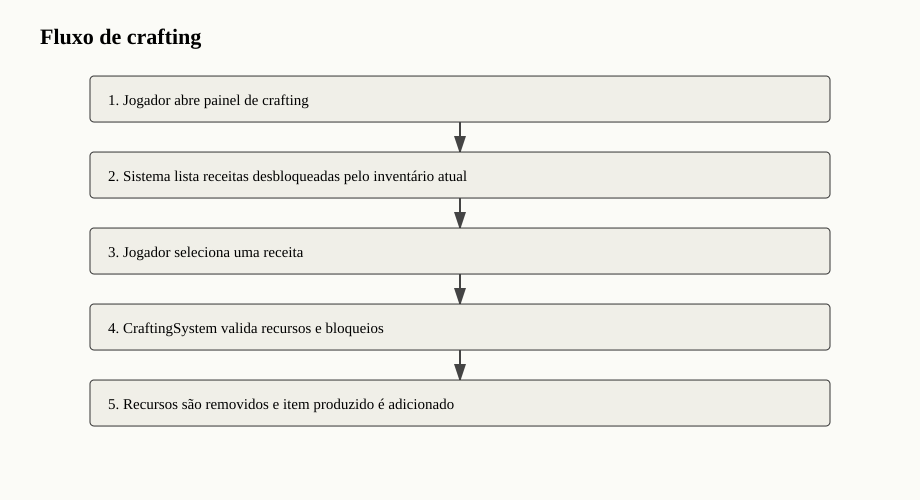
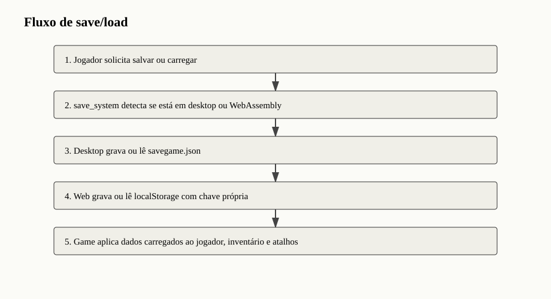
A progressão para bosses é controlada por sequência e contagem de mapas. Após determinado número de mapas normais, o jogo seleciona arena de boss. A derrota do boss concede recompensas, remove minions quando necessário e libera continuidade da partida. O terceiro boss utiliza comportamento de invocador, criando ondas que aumentam a pressão no jogador.
A interface combina elementos desenhados por código com sprites de UI. O menu principal apresenta ações, o HUD mostra vida, fome, stamina, munição, atalhos e mensagens, e os painéis de inventário/crafting organizam itens em células. A câmera segue o jogador no mundo, mantendo o foco na exploração e nos inimigos próximos.
| Ação | Entrada |
|---|---|
| Mover | WASD |
| Correr | Shift |
| Mirar | Mouse |
| Atacar | Clique esquerdo ou Espaço |
| Interagir/buscar/porta | E |
| Usar consumível | Q |
| Crafting | B |
| Craftar selecionado | C |
| Alternar receita | Tab |
| Inventário | I |
| Atalhos | 1 a 6 |
| Salvar/carregar | F5/F9 |
| Voltar/sair | Esc |
| Ação | Entrada |
|---|---|
| Movimento | Analógico esquerdo |
| Mira | Analógico direito |
| Correr | L3 |
| Atacar | R2 |
| Interagir | X |
| Crafting | Quadrado |
| Usar item | Triângulo |
| Inventário | R3 |
| Alternar atalhos | L1/R1 ou direcional |
| Menu/voltar | Options/Share |
O feedback combina som, popups flutuantes, mensagens textuais, efeitos de impacto, overlays de dano, barras de vida de boss e indicadores de munição. Esses elementos reduzem ambiguidade: o jogador sabe quando recebeu dano, quando coletou itens, quando uma receita falhou ou quando uma arma está sem munição.
O projeto pode ser executado localmente com Python e Pygame ou empacotado para web. A execução desktop usa pygame>=2.5, enquanto o build web usa pygame-ce e pygbag. A configuração pygbag.ini ignora diretórios e arquivos que não devem entrar no pacote final, como build, .git, __pycache__, savegame.json e settings.json.
63 | ## Rodar no Desktop
64 |
65 | ```powershell
66 | python -m pip install -r requirements.txt
67 | python main.py
68 | ```
69 |
70 | Dependencia principal:
71 |
72 | ```text
73 | pygame>=2.5
74 | ``` 76 | ## Build Web
77 |
78 | ```powershell
79 | python -m pip install -r requirements-web.txt
80 | python -m pygbag --build .
81 | python tools/patch_web_build.py
82 | ```
83 |
84 | A saida fica em `build/web`. O workflow em `.github/workflows/pages.yml` executa o build, aplica o ajuste da tela de carregamento e publica no GitHub Pages.Após a geração do build, o script tools/patch_web_build.py ajusta a página gerada pelo Pygbag. O workflow de GitHub Pages descrito no README executa build, aplica o patch e publica os artefatos para acesso online.
A persistência foi pensada com abstração mínima. A mesma chamada save_game grava no meio adequado ao ambiente. Essa solução evita duplicar lógica de jogo e limita diferenças de plataforma a uma função de acesso ao storage.
settings.json armazena preferências como volume. Esse arquivo é tratado como gerado localmente e não precisa ser versionado. Na web, o projeto usa uma chave própria em localStorage para manter configurações entre sessões do navegador.
A validação do projeto é predominantemente funcional e manual, adequada ao estágio acadêmico e à natureza interativa do jogo. Como jogos dependem de percepção visual, áudio e resposta de entrada, a validação manual continua importante mesmo quando testes automatizados são adicionados futuramente.
| Área | Procedimento | Resultado esperado | Tipo |
|---|---|---|---|
| Inicialização desktop | Executar python main.py | Tela de menu deve abrir e tocar música do menu. | Manual |
| Novo jogo | Selecionar Novo Jogo | Mapa inicial carregado com jogador no ponto seguro. | Manual |
| Movimento e colisão | Mover com WASD contra paredes/carros | Jogador não atravessa camadas sólidas. | Manual |
| Busca | Aproximar de loot/carro/natureza e pressionar E | Mensagem de recompensa e atualização do inventário. | Manual |
| Crafting | Abrir B e craftar receita possível | Recursos consumidos, item gerado e som de confirmação. | Manual |
| Combate melee | Atacar zumbi próximo | Zumbi recebe dano e morre ao zerar vida. | Manual |
| Combate arma de fogo | Equipar pistola/escopeta e atirar | Munição correta consumida, projéteis e impactos renderizados. | Manual |
| Status especiais | Usar munição incendiária/perfurante | Queimadura ou congelamento aplicado no inimigo. | Manual |
| Save/load | Salvar F5 e carregar F9 | Estado principal restaurado. | Manual |
| Build web | python -m pygbag --build . | Pacote build/web criado para GitHub Pages. | Pipeline |
| Risco | Impacto | Mitigação existente | Evolução sugerida |
|---|---|---|---|
| main.py muito concentrado | Dificulta manutenção de longo prazo. | Módulos auxiliares já separam dados e entidades. | Extrair serviços de UI, combate e transições. |
| Validação manual | Regressões podem passar despercebidas. | Fluxos principais documentados. | Criar testes unitários para inventário, crafting, save e map_loader. |
| Dependência de padrões de nome de sprites | Assets fora do padrão não carregam. | Regex e exceções explícitas ajudam diagnóstico. | Documentar convenção para artistas/conteúdo. |
| Diferenças desktop/web | Áudio, controle e performance podem variar. | Uso de OGG, FPS menor na web e localStorage. | Criar checklist por navegador. |
| Colisões por camada | Nomes de layers incorretos quebram colisão. | Palavras-chave amplas e fallback de assets. | Criar validação automática de mapas TMJ. |
O Dead Streets demonstra a construção de um jogo 2D de sobrevivência com escopo significativo para um projeto acadêmico em Python. A implementação integra renderização, mapas externos, inventário, crafting, armas, inimigos, bosses, áudio, persistência e publicação web. O projeto mostra domínio de estruturas de dados, eventos, orientação a objetos, manipulação de arquivos, modularização e uso de bibliotecas.
Do ponto de vista técnico, a maior força do projeto está na integração entre conteúdo externo e lógica de jogo. Mapas criados no Tiled geram colisões, loot e transições; spritesheets são interpretadas por padrão de nomes; dados de armas e receitas ficam declarativos; save funciona em desktop e web. Esses elementos tornam o jogo expansível e documentável.
Como evolução, recomenda-se criar testes automatizados para módulos de regras, dividir gradualmente o arquivo main.py em componentes de domínio, adicionar validação automática de mapas, padronizar documentação de assets e criar um roteiro formal de testes por plataforma. Ainda assim, o estado atual já constitui uma base funcional, jogável e tecnicamente coerente.
PYTHON SOFTWARE FOUNDATION. Python Documentation. Disponível em: https://docs.python.org/. Acesso em: 28 maio 2026.
PYGAME COMMUNITY. Pygame documentation. Disponível em: https://www.pygame.org/docs/. Acesso em: 28 maio 2026.
PYGBAG. Pygbag project documentation. Disponível em: https://pygame-web.github.io/. Acesso em: 28 maio 2026.
TILED. Tiled Map Editor documentation. Disponível em: https://doc.mapeditor.org/. Acesso em: 28 maio 2026.
RIBEIRO, Gustavo Emanuel Abreu. Dead Streets: repositório local do projeto Jogo-Python. Brasília, 2026.
Este apêndice lista funções e métodos identificados por análise estática dos arquivos Python. O objetivo é oferecer rastreabilidade para manutenção, revisão e estudo do código.
| Módulo | Função | Linha |
|---|---|---|
| main.py | _resolve_tmj_groups | 38 |
| main.py | _web_audio_path | 164 |
| main.py | _web_local_storage | 171 |
| main.py | _load_raw_sprite | 528 |
| main.py | _load_scaled_sprite | 538 |
| main.py | _load_ui_sprite | 554 |
| main.py | _build_facade_sprite | 568 |
| main.py | _make_shadow | 613 |
| main.py | _dim_sprite | 624 |
| main.py | _desaturate_sprite | 630 |
| main.py | _tint_sprite | 656 |
| main.py | _load_shot_impact_frames | 687 |
| main.py | _load_axe_projectile_frames | 708 |
| main.py | main | 4782 |
| save_system.py | _web_storage | 13 |
| save_system.py | save_game | 24 |
| save_system.py | load_game | 50 |
| save_system.py | save_exists | 70 |
| Classe | Método | Linha |
|---|---|---|
| Game | __init__ | 1010 |
| Game | _present_frame | 1126 |
| Game | _build_menu_title_layers | 1135 |
| Game | _first_existing_path | 1145 |
| Game | _available_normal_maps | 1151 |
| Game | _is_boss_map_path | 1154 |
| Game | _available_boss_maps | 1158 |
| Game | _boss_loop_level | 1161 |
| Game | _next_boss_key | 1167 |
| Game | _next_boss_map_path | 1173 |
| Game | _boss_stats_for_map | 1181 |
| Game | _is_summoner_boss_active | 1193 |
| Game | _choose_random_normal_map | 1196 |
| Game | _normal_map_index | 1206 |
| Game | _boss_is_alive | 1212 |
| Game | _boss_enemies | 1217 |
| Game | _is_boss_enemy | 1224 |
| Game | _is_horde_map | 1227 |
| Game | _load_settings | 1230 |
| Game | _save_settings | 1258 |
| Game | _music_volume | 1272 |
| Game | _sfx_volume | 1278 |
| Game | _apply_audio_settings | 1283 |
| Game | _load_sfx | 1295 |
| Game | _play_sfx | 1309 |
| Game | _play_music | 1316 |
| Game | _play_title_music | 1338 |
| Game | _play_game_music | 1341 |
| Game | _play_boss_music | 1344 |
| Game | _play_active_music | 1347 |
| Game | _reset_game | 1353 |
| Game | _clear_world_content | 1407 |
| Game | _store_exterior_world_state | 1427 |
| Game | _restore_exterior_world_state | 1456 |
| Game | _set_collision_rects | 1494 |
| Game | _nearby_collision_rects | 1507 |
| Game | _generate_world | 1526 |
| Game | _load_tiled_world | 1557 |
| Game | _default_spawn_target | 1614 |
| Game | _switch_to_tiled_map | 1619 |
| Game | _enter_random_interior | 1643 |
| Game | _leave_interior | 1661 |
| Game | _use_map_exit | 1695 |
| Game | _populate_decorations | 1755 |
| Game | _rebuild_static_world_drawables | 1777 |
| Game | _random_world_position | 1786 |
| Game | _is_position_blocked | 1797 |
| Game | _find_open_position_near | 1806 |
| Game | _is_gamepad_live | 1823 |
| Game | _remember_gamepad | 1837 |
| Game | _clear_gamepad | 1845 |
| Game | _scan_sdl_gamepad | 1853 |
| Game | _scan_raw_gamepad | 1866 |
| Game | _get_gamepad | 1883 |
| Game | _deadzone_axis | 1912 |
| Game | _gamepad_axis | 1917 |
| Game | _gamepad_axis_count | 1925 |
| Game | _gamepad_button_count | 1933 |
| Game | _uses_sdl_gamepad_mapping | 1941 |
| Game | _gamepad_button_map | 1944 |
| Game | _has_any_button | 1975 |
| Game | _gamepad_right_stick | 1978 |
| Game | _poll_gamepad_buttons | 2013 |
| Game | _apply_gamepad_input | 2027 |
| Game | _spawn_zombie | 2100 |
| Game | _zombie_variant_weights | 2140 |
| Game | _spawn_boss_zombie | 2149 |
| Game | _create_boss_zombie | 2179 |
| Game | _spawn_loop_boss_partner | 2199 |
| Game | _apply_loaded_state | 2230 |
| Game | process_input | 2251 |
| Game | _handle_cheat_key | 2377 |
| Game | process_menu_input | 2392 |
| Game | _current_menu_actions | 2430 |
| Game | _clamp_menu_selection | 2437 |
| Game | _move_menu_selection | 2444 |
| Game | _activate_menu_selection | 2451 |
| Game | _adjust_selected_setting | 2469 |
| Game | _process_gamepad_menu_input | 2480 |
| Game | _handle_main_menu_action | 2528 |
| Game | _tutorial_pages_legacy_unused | 2552 |
| Game | _tutorial_pages | 2580 |
| Game | _advance_tutorial | 2608 |
| Game | _close_tutorial | 2616 |
| Game | _process_tutorial_gamepad_input | 2623 |
| Game | _load_saved_game | 2638 |
| Game | _set_menu_message | 2655 |
| Game | _main_menu_button_rects | 2659 |
| Game | _blank_menu_button_rect | 2677 |
| Game | _saves_menu_button_rects | 2681 |
| Game | _settings_slider_rects | 2691 |
| Game | _settings_back_button_rect | 2698 |
| Game | _handle_saves_menu_click | 2701 |
| Game | _handle_settings_menu_click | 2722 |
| Game | _update_difficulty | 2739 |
| Game | _update_survival | 2744 |
| Game | _update_zombies | 2756 |
| Game | _is_flanking_boss | 2785 |
| Game | _boss_duo_escape_direction | 2788 |
| Game | _update_duo_boss_target | 2802 |
| Game | _update_flanking_boss | 2820 |
| Game | _update_summoner_boss | 2868 |
| Game | _summon_boss_wave | 2932 |
| Game | _update_shot_impacts | 2953 |
| Game | _spawn_axe_projectile | 2958 |
| Game | _update_axe_projectiles | 2973 |
| Game | _update_boss_phase | 2993 |
| Game | _update_spawns | 3011 |
| Game | _find_nearest_node | 3035 |
| Game | _find_nearest_corpse | 3051 |
| Game | _find_nearest_trigger | 3066 |
| Game | _triggers_in_range | 3080 |
| Game | _sync_exit_trigger_state | 3093 |
| Game | _handle_map_transitions | 3098 |
| Game | _handle_search | 3130 |
| Game | _corpse_loot_rewards | 3168 |
| Game | _grant_rewards | 3196 |
| Game | _grant_boss_rewards | 3224 |
| Game | _add_item_popups | 3244 |
| Game | _add_alert_popup | 3262 |
| Game | _update_floating_popups | 3266 |
| Game | _handle_attack | 3271 |
| Game | _attack_melee | 3302 |
| Game | _fire_gun | 3325 |
| Game | _find_shot_hits | 3380 |
| Game | _apply_fire_splash | 3407 |
| Game | _handle_zombie_death | 3427 |
| Game | _all_boss_enemies_defeated | 3439 |
| Game | _complete_boss_defeat | 3443 |
| Game | _despawn_summoner_minions | 3455 |
| Game | _damage_zombie | 3465 |
| Game | _apply_weapon_status | 3480 |
| Game | _handle_heal | 3492 |
| Game | _handle_crafting | 3538 |
| Game | _handle_crafting_click | 3551 |
| Game | _set_message | 3578 |
| Game | _is_gameplay_paused_by_panel | 3582 |
| Game | update_game_state | 3585 |
| Game | _return_to_title_after_death | 3639 |
| Game | render_menu | 3649 |
| Game | _draw_menu_background_overlay | 3673 |
| Game | _draw_main_menu | 3676 |
| Game | _draw_menu_title | 3692 |
| Game | _draw_menu_panel | 3710 |
| Game | _wrap_text | 3717 |
| Game | _draw_tutorial_paragraph | 3732 |
| Game | _draw_saves_menu | 3782 |
| Game | _draw_settings_menu | 3804 |
| Game | _draw_blank_menu_button | 3836 |
| Game | _resolve_player_collisions | 3850 |
| Game | _resolve_player_axis | 3890 |
| Game | _player_collision_rect | 3923 |
| Game | _entity_collision_rect | 3926 |
| Game | _position_hits_obstacle | 3931 |
| Game | _movement_crosses_obstacle | 3937 |
| Game | _push_entity_out_of_obstacles | 3950 |
| Game | _resolve_zombie_obstacles | 3977 |
| Game | _separate_zombies | 4014 |
| Game | render | 4061 |
| Game | _draw_world_scene | 4079 |
| Game | _update_camera | 4112 |
| Game | screen_to_world | 4126 |
| Game | _window_to_screen | 4129 |
| Game | _draw_ground | 4137 |
| Game | _draw_crosshair | 4152 |
| Game | _draw_interact_hint | 4160 |
| Game | _draw_damage_overlay | 4191 |
| Game | _draw_gamepad_debug | 4205 |
| Game | _draw_ui | 4242 |
| Game | _draw_tutorial_overlay | 4269 |
| Game | _draw_boss_health_bar | 4306 |
| Game | _draw_quick_access_bar | 4332 |
| Game | _quick_access_bar_rect | 4348 |
| Game | _quick_slot_rect | 4351 |
| Game | _quick_slot_index_at | 4363 |
| Game | _draw_ammo_indicator | 4369 |
| Game | _draw_inventory_panel | 4417 |
| Game | _visible_inventory_items | 4438 |
| Game | _inventory_item_rects | 4441 |
| Game | _inventory_item_at | 4471 |
| Game | _draw_slot_item | 4478 |
| Game | _inventory_close_button_rect | 4503 |
| Game | _crafting_panel_rect | 4509 |
| Game | _crafting_close_button_rect | 4513 |
| Game | _crafting_recipe_rects | 4518 |
| Game | _scroll_crafting | 4541 |
| Game | _draw_crafting_panel | 4554 |
| Game | _draw_crafting_scrollbar | 4605 |
| Game | _draw_crafting_item_on | 4615 |
| Game | _draw_icon_meter | 4643 |
| Game | _available_recipe_names | 4670 |
| Game | _get_selected_recipe | 4677 |
| Game | _cycle_recipe | 4683 |
| Game | _cycle_quick_slot | 4690 |
| Game | _select_quick_slot | 4695 |
| Game | _assign_quick_slot_item | 4706 |
| Game | _weapon_variants_for_slot | 4721 |
| Game | _owned_weapon_variants | 4724 |
| Game | _slot_quantity | 4731 |
| Game | _display_item_for_slot | 4738 |
| Game | _equip_weapon_slot | 4746 |
| Game | _equip_weapon | 4758 |
| Game | run | 4767 |
Os trechos abaixo foram selecionados por representarem os contratos centrais do projeto: configuração global, carregamento de sprites, criação de receitas, persistência e leitura de mapas.
20 | from save_system import load_game, save_exists, save_game
21 | from weapons import WEAPONS, WEAPON_FAMILIES, WEAPON_ITEMS
22 | from zombie import AXE_THROW_MAX_DISTANCE, AXE_THROW_MIN_DISTANCE, Zombie
23 |
24 |
25 | IS_WEB = sys.platform == "emscripten"
26 | WIDTH, HEIGHT = 960, 540
27 | WINDOW_WIDTH, WINDOW_HEIGHT = (WIDTH, HEIGHT) if IS_WEB else (1600, 900)
28 | TARGET_FPS = 45 if IS_WEB else 60
29 | COLLISION_BUCKET_SIZE = 128
30 | WORLD_WIDTH, WORLD_HEIGHT = 2200, 1400
31 | PROJECT_ROOT = Path(__file__).resolve().parent
32 | GAME_TITLE = "Dead Streets"
33 | GAME_SUBTITLE = "ZOMBIE SURVIVAL"
34 | LOCAL_MAP_ROOT = PROJECT_ROOT / "maps"
35 | MAP_ROOT = LOCAL_MAP_ROOT if LOCAL_MAP_ROOT.exists() else PROJECT_ROOT.parent
36 |
37 |
38 | def _resolve_tmj_groups(groups: List[Tuple[str, ...]], pattern: str) -> List[Path]:
39 | paths: List[Path] = []
40 | known_names = {name.lower() for group in groups for name in group}
41 |
42 | for group in groups:
43 | selected = next((MAP_ROOT / name for name in group if (MAP_ROOT / name).exists()), MAP_ROOT / group[0])
44 | if selected.name.lower() not in {path.name.lower() for path in paths}:
45 | paths.append(selected)
46 |
47 | if MAP_ROOT.exists():
48 | for path in sorted(MAP_ROOT.glob(pattern), key=lambda item: item.name.lower()):
49 | if path.suffix.lower() == ".tmj" and path.name.lower() not in known_names:
50 | paths.append(path)
51 | return paths
52 |
53 |
54 | NORMAL_MAP_PATHS = _resolve_tmj_groups(
55 | [
56 | ("Mapa 1.tmj", "Mapa 1.1.tmj"),
57 | ("Mapa 2.tmj",),
58 | ("Mapa 3.tmj",),
59 | ("Mapa 4.tmj",),
60 | ],
61 | "Mapa *.tmj",
62 | )
63 | BOSS_MAP_PATHS = _resolve_tmj_groups(
64 | [ 83 | BOSS_MUSIC_PATH = AUDIO_ROOT / "Boss_Fight.ogg"
84 | GAME_MUSIC_GAIN = 1.0
85 | SFX_ROOT = AUDIO_ROOT / "sfx"
86 | SFX_GAIN = 1.25
87 | WEB_SETTINGS_KEY = "rua_morta_settings"
88 | TILED_MAP_SCALE = 2
89 | BG_COLOR = (24, 29, 31)
90 | SEARCH_RANGE = 50
91 | DOOR_RANGE = 74
92 | EXIT_RANGE = 64
93 | START_CLEAR_RADIUS = 170
94 | ZOMBIE_AVOIDANCE_ANGLES = (0, 25, -25, 50, -50, 85, -85, 125, -125, 180)
95 | ZOMBIE_SEPARATION_STRENGTH = 58.0
96 | ZOMBIE_SEPARATION_ITERATIONS = 2
97 | ZOMBIE_SEPARATION_BUCKET_SIZE = 96
98 | BOTTOM_WORLD_PADDING = 118
99 | GAMEPAD_A = 0
100 | GAMEPAD_B = 1
101 | GAMEPAD_X = 2
102 | GAMEPAD_Y = 3
103 | GAMEPAD_BACK = 4
104 | GAMEPAD_GUIDE = 5
105 | GAMEPAD_START = 6
106 | GAMEPAD_L3 = 7
107 | GAMEPAD_R3 = 8
108 | GAMEPAD_L1 = 9
109 | GAMEPAD_R1 = 10
110 | GAMEPAD_DPAD_UP = 11
111 | GAMEPAD_DPAD_DOWN = 12
112 | GAMEPAD_DPAD_LEFT = 13
113 | GAMEPAD_DPAD_RIGHT = 14
114 | GAMEPAD_AXIS_LEFT_X = 0
115 | GAMEPAD_AXIS_LEFT_Y = 1
116 | GAMEPAD_AXIS_RIGHT_X = 2
117 | GAMEPAD_AXIS_RIGHT_Y = 3
118 | GAMEPAD_AXIS_L2 = 4
119 | GAMEPAD_AXIS_R2 = 5
120 | RAW_GAMEPAD_BACK = 8
121 | RAW_GAMEPAD_START = 9
122 | RAW_GAMEPAD_L3 = 10
123 | RAW_GAMEPAD_R3 = 11
124 | RAW_GAMEPAD_DPAD_UP = 12
125 | RAW_GAMEPAD_DPAD_DOWN = 13
126 | RAW_GAMEPAD_DPAD_LEFT = 14
127 | RAW_GAMEPAD_DPAD_RIGHT = 15
128 | RAW_GAMEPAD_GUIDE = 16
129 | RAW_GAMEPAD_TOUCHPAD = 17
130 | GAMEPAD_RESCAN_INTERVAL_MS = 600
131 | GAMEPAD_DISCONNECT_GRACE_MS = 1400
132 |
133 | SFX_FILES = { 120 |
121 | for loadout_name in ("taco", "pistola", "escopeta"):
122 | weapon_layers = cls._load_loadout_sprites(loadout_name, LOADOUTS[loadout_name], include_no_hands=False)
123 | cls._sprite_cache[loadout_name] = cls._compose_weapon_loadout(loadout_name, main_body, weapon_layers)
124 |
125 | for variant_name, base_name in LOADOUT_ALIASES.items():
126 | weapon_layers = cls._load_loadout_sprites(base_name, LOADOUTS[base_name], include_no_hands=False)
127 | weapon_layers = cls._tint_weapon_layers(weapon_layers, WEAPON_TINTS[variant_name])
128 | cls._sprite_cache[variant_name] = cls._compose_weapon_loadout(variant_name, main_body, weapon_layers)
129 |
130 | if "maos" not in cls._sprite_cache or "idle" not in cls._sprite_cache["maos"]:
131 | raise FileNotFoundError(f"Nenhuma spritesheet do personagem encontrada em {CHARACTER_ROOT}")
132 |
133 | @classmethod
134 | def _load_loadout_sprites(
135 | cls,
136 | loadout_name: str,
137 | data: dict[str, object],
138 | include_no_hands: bool,
139 | ) -> dict[str, dict[str, list[pygame.Surface]]]:
140 | animations: dict[str, dict[str, list[pygame.Surface]]] = {}
141 | root = Path(data["root"])
142 | prefix = str(data["prefix"])
143 | pattern = re.compile(
144 | rf"{re.escape(prefix)}_(?P<direction>down|up|side-left|side)_(?P<animation>.+)-Sheet(?P<frames>\d+)\.png$",
145 | re.IGNORECASE,
146 | )
147 |
148 | for spritesheet_path in root.rglob(f"{prefix}_*.png"):
149 | filename = spritesheet_path.name.lower()
150 | is_no_hands = "no-hands" in filename or "nohands" in filename
151 | if is_no_hands != include_no_hands:
152 | continue
153 |
154 | match = pattern.match(spritesheet_path.name)
155 | if match is None:
156 | continue
157 |
158 | direction = DIRECTION_NAMES[match.group("direction").lower()]
159 | raw_animation = match.group("animation").lower()
160 | raw_animation = raw_animation.replace("_nohands", "").replace("_no-hands", "")
161 | animation = ANIMATION_NAMES.get(raw_animation)
162 | if animation is None:
163 | continue
164 |
165 | frames = cls._load_spritesheet(spritesheet_path, int(match.group("frames")))
166 | if animation == "idle_and_run":
167 | animations.setdefault("idle", {})[direction] = frames
168 | animations.setdefault("run", {})[direction] = frames
169 | else:
170 | animations.setdefault(animation, {})[direction] = frames
171 |
172 | return animations 114 | pattern = re.compile(
115 | rf"{re.escape(prefix)}_(?P<direction>Down|Up|Side-left|Side)_(?P<animation>.+)-Sheet(?P<frames>\d+)\.png$",
116 | re.IGNORECASE,
117 | )
118 | sprite_set: dict[str, dict[str, list[pygame.Surface]]] = {}
119 |
120 | for spritesheet_path in root.glob(f"{prefix}_*.png"):
121 | match = pattern.match(spritesheet_path.name)
122 | if match is None:
123 | continue
124 |
125 | direction = DIRECTION_NAMES[match.group("direction").lower()]
126 | animation = ANIMATION_NAMES.get(match.group("animation").lower())
127 | if animation is None:
128 | continue
129 |
130 | frames = cls._load_spritesheet(spritesheet_path, int(match.group("frames")), int(data["scale"]))
131 | sprite_set.setdefault(animation, {})[direction] = frames
132 |
133 | if "walk" not in sprite_set:
134 | raise FileNotFoundError(f"Nenhuma spritesheet de zumbi encontrada em {root}")
135 |
136 | cls._sprite_cache[zombie_type] = sprite_set
137 |
138 | @classmethod
139 | def _load_spritesheet(cls, path: Path, frame_count: int, scale: int) -> list[pygame.Surface]:
140 | display_ready = pygame.display.get_surface() is not None
141 | sheet = pygame.image.load(str(path))
142 | if display_ready:
143 | sheet = sheet.convert_alpha()
144 |
145 | frame_width = sheet.get_width() // frame_count
146 | frame_height = sheet.get_height()
147 | frames: list[pygame.Surface] = []
148 | for frame_index in range(frame_count):
149 | frame = pygame.Surface((frame_width, frame_height), pygame.SRCALPHA)
150 | frame.blit(
151 | sheet,
152 | (0, 0),
153 | pygame.Rect(frame_index * frame_width, 0, frame_width, frame_height),
154 | )
155 | frames.append(
156 | pygame.transform.scale(
157 | frame,
158 | (frame_width * scale, frame_height * scale),
159 | )
160 | )
161 | return frames
162 |
163 | @staticmethod
164 | def _direction_from_vector(direction: pygame.Vector2) -> str:
165 | if abs(direction.x) > abs(direction.y): 260 | cache_key = (gid, flipped_h, flipped_v)
261 |
262 | tileset = self._find_tileset(gid)
263 | if tileset is None:
264 | return None, None
265 |
266 | if cache_key in self._tile_cache:
267 | return self._tile_cache[cache_key], tileset
268 |
269 | local_id = gid - tileset.firstgid
270 | if local_id in tileset.tile_image_paths:
271 | tile = self._load_tileset_image(tileset.tile_image_paths[local_id])
272 | if tile is None:
273 | return None, tileset
274 | elif tileset.image is not None and tileset.columns > 0:
275 | source_x = (local_id % tileset.columns) * tileset.tile_width
276 | source_y = (local_id // tileset.columns) * tileset.tile_height
277 | tile = pygame.Surface((tileset.tile_width, tileset.tile_height), pygame.SRCALPHA)
278 | tile.blit(
279 | tileset.image,
280 | (0, 0),
281 | pygame.Rect(source_x, source_y, tileset.tile_width, tileset.tile_height),
282 | )
283 | else:
284 | return None, tileset
285 |
286 | if flipped_h or flipped_v:
287 | tile = pygame.transform.flip(tile, flipped_h, flipped_v)
288 | if self.scale != 1:
289 | tile = pygame.transform.scale(tile, (tile.get_width() * self.scale, tile.get_height() * self.scale))
290 |
291 | self._tile_cache[cache_key] = tile
292 | return tile, tileset
293 |
294 | def _find_tileset(self, gid: int) -> TileSet | None: 8 | class CraftingSystem:
9 |
10 | crafting_recipes: Dict[str, Dict[str, object]] = {
11 | "taco": {"cost": {"madeira": 3}},
12 | "comida": {"cost": {"erva": 1, "madeira": 1}, "amount": 1},
13 | "balas": {"cost": {"metal": 1, "polvora": 1}, "amount": 6},
14 | "cartuchos": {"cost": {"metal": 2, "polvora": 1}, "amount": 3, "unlock_any": ["escopeta", "escopeta_incendiaria"]},
15 | "balas_incendiarias": {
16 | "cost": {"balas": 4, "polvora": 1},
17 | "amount": 4,
18 | "unlock": "pistola_incendiaria",
19 | },
20 | "balas_perfurantes": {
21 | "cost": {"balas": 4, "metal": 2},
22 | "amount": 4,
23 | "unlock": "pistola_perfurante",
24 | },
25 | "cartuchos_incendiarios": {
26 | "cost": {"cartuchos": 2, "polvora": 1},
27 | "amount": 2,
28 | "unlock": "escopeta_incendiaria",
29 | },
30 | "kit_medico": {"cost": {"pano": 2, "erva": 2}},
31 | }
32 |
33 | def is_recipe_unlocked(self, item_name: str, inventory: Inventory | None = None) -> bool:
34 | recipe = self.crafting_recipes.get(item_name)
35 | if recipe is None: 8 |
9 | defaults = {
10 | "madeira": 0,
11 | "metal": 0,
12 | "comida": 0,
13 | "pano": 0,
14 | "erva": 0,
15 | "kit_medico": 0,
16 | "polvora": 0,
17 | "balas": 0,
18 | "balas_incendiarias": 0,
19 | "balas_perfurantes": 0,
20 | "cartuchos": 0,
21 | "cartuchos_incendiarios": 0,
22 | "maos": 1,
23 | "taco": 0,
24 | "pistola": 0,
25 | "pistola_incendiaria": 0,
26 | "pistola_perfurante": 0,
27 | "escopeta": 0,
28 | "escopeta_incendiaria": 0,
29 | }
30 | self.inventory: Dict[str, int] = defaults
31 | if initial: 13 | def _web_storage() -> object | None:
14 | if sys.platform != "emscripten":
15 | return None
16 | try:
17 | import platform
18 |
19 | return platform.window.localStorage
20 | except (AttributeError, ImportError):
21 | return None
22 |
23 |
24 | def save_game(
25 | file_path: str,
26 | player: Player,
27 | inventory: Inventory,
28 | game_time: float,
29 | quick_slots: list[str] | None = None,
30 | ) -> None:
31 | data: Dict[str, Any] = {
32 | "player_health": player.player_health,
33 | "player_hunger": player.player_hunger,
34 | "player_position": list(player.player_position),
35 | "inventory": inventory.to_dict(),
36 | "game_time": game_time,
37 | "current_weapon": player.current_weapon,
38 | }
39 | if quick_slots is not None:
40 | data["quick_slots"] = list(quick_slots)
41 | storage = _web_storage()
42 | if storage is not None:
43 | storage.setItem(WEB_SAVE_KEY, json.dumps(data))
44 | return
45 |
46 | with open(file_path, "w", encoding="utf-8") as file:
47 | json.dump(data, file, indent=2)
48 |
49 |
50 | def load_game(file_path: str) -> Dict[str, Any] | None:
51 | storage = _web_storage()
52 | if storage is not None:
53 | raw_data = storage.getItem(WEB_SAVE_KEY)
54 | if not raw_data:
55 | return None
56 | data = json.loads(str(raw_data))
57 | else:
58 | try:
59 | with open(file_path, "r", encoding="utf-8") as file:
60 | data = json.load(file)
61 | except FileNotFoundError:
62 | return None
63 |